Al disponer de una Unity ID además de poder utilizar el motor de videojuegos (licencia de uso) también se puede usar la Unity Asset Store
desde la cual se podrá descargar assets tanto gratuitos como de pago.
Para desarrollar videojuegos se necesita el editor Unity.
La primera vez que se accede a Unity Hub con la Unity ID se indica que se puede instalar un editor Unity.
Por defecto, el editor Unity que se instalará será la última versión estable LTS (Long Term Support).
No se recomienda esta instalación por defecto ya que no permite configurar la instalación.
Desde el apartado Installs de Unity Hub
se pueden instalar las diferentes versiones del editor Unity disponibles:
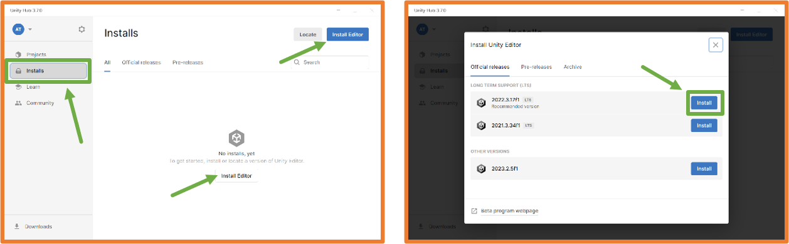
Se debe elegir qué configuración se quiere para el editor Unity que permitirá crear los ejecutables del juego para cada plataforma, añadir idiomas asiáticos y la documentación de Unity.
Para clase será suficiente con marcar Linux Build Support (IL2CPP).
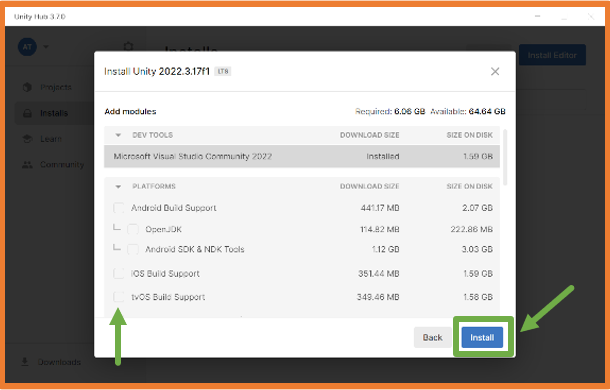
Editor de código
Unity necesita un editor de código para la programación de scripts, en Windows durante la instalación del editor Unity se incluye Microsoft Visual Studio Community.
En clase, aquellos que lo tengan, detectará Visual Studio Code y lo configurará como editor por defecto.
Si no se tiene instalado ese editor y no se quiere instalar, se debe desmarcar.
En el caso de usar Microsoft Visual Studio Community o Visual Studio Code
como editor por defecto se pueden instalar las extensiones para el lenguaje de programación C# que es el usado con Unity.
Si no se tiene instalado Microsoft Visual Studio Community y no se quiere instalar, se debe desmarcar.
Se puede utilizar cualquier otro editor de código cambiando la configuración del editor Unity una vez esté instalado.
En Menú → Edit → Preferences.
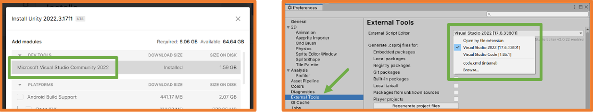
Si más adelante en el desarrollo se necesita, se pueden añadir/eliminar módulos al editor.
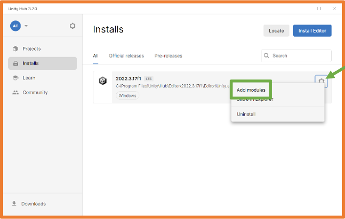
Crear Proyecto Unity
Unity HUB será el punto de inicio de cualquier proyecto Unity, en su ventana se pueden ver las secciones:
Projects: gestor de proyectos.
Installs: gestor de editores Unity instalados.
Learn: apartado de autoaprendizaje
Community: acceso a la comunidad con secciones como Assets Store o Foros.
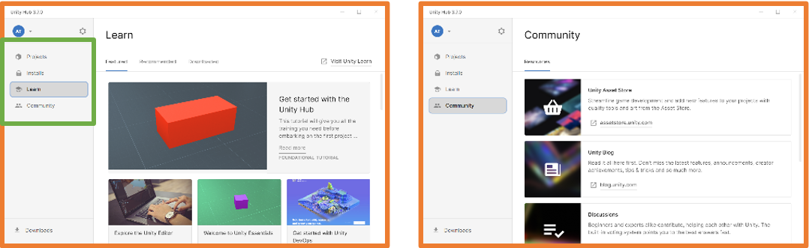
Desde Unity Hub, en el apartado Projects se pueden crear proyectos pulsando el botón New project.
Al crear un proyecto se debe elegir el tipo de proyecto para que se carguen las librerías necesarias.
Una vez creado el proyecto, este estará disponible en Unity Hub.
Durante la creación se abrirá el editor Unity para ese proyecto.
Actividad 1: Instalación de un editor Unity.
Actividad 2: Crea el proyecto PruebaTuNombre.
Editor Unity
Por defecto la ventana del editor Unity tiene el siguiente aspecto:
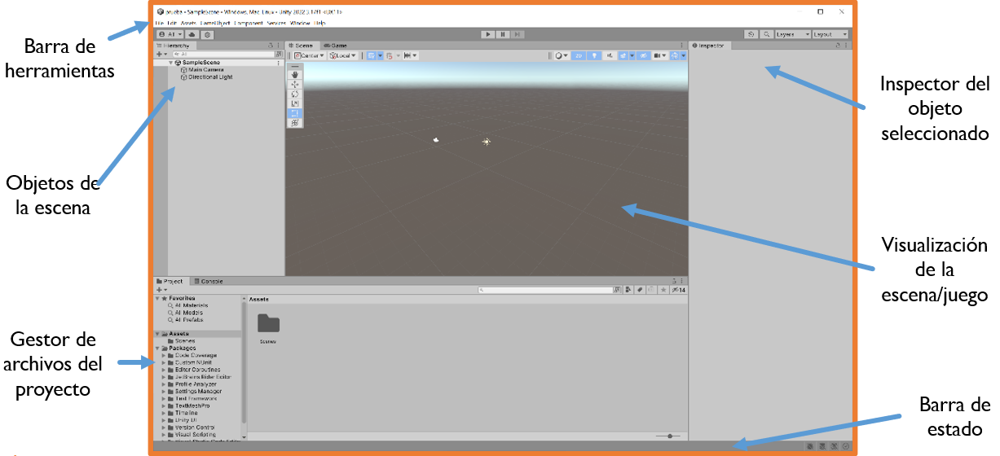
Unity hace uso de la Programación Orientada a Objetos,
por esta razón todos los elementos del juego se incluyen en la jerarquía de objetos.
El juego ocupa la posición más alta de la jerarquía y
dentro de él se ubican las escenas que podrían considerarse las pantallas del juego.
La jerarquía muestra todos los elementos que tiene una escena.
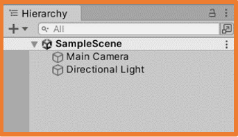
Dentro de cada escena se deben añadir todos los elementos que se necesiten,
estos elementos son los GameObject, las escenas también siguen una estructura jerárquica pudiendo agruparse los GameObjects
unos dentro de otros.
Por defecto, un proyecto Unity contiene una Escena que a su vez contiene un GameObject
de tipo cámara llamado Main Camera y un GameObject de tipo
luz llamado Directional Light.
En la parte central del editor se puede observar una visualización de la escena que
cuando se pulse el botón de reproducir juego se convertirá en la visualización desde la cámara configurada en el juego.
Cuando se selecciona un objeto de la escena, en el Inspector se pueden observar todas sus características.
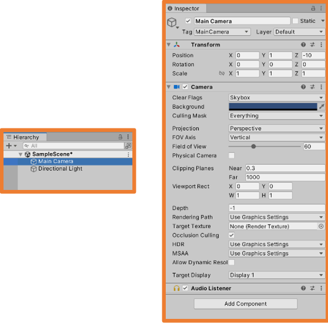
Desde el código se podrá acceder a los componentes de cada objeto.
Cada tipo de objeto tendrá unos componentes por defecto, y además, se les puede añadir componentes si se necesita.
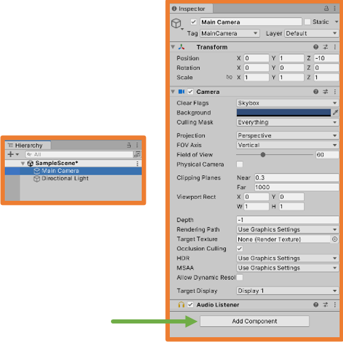 Main Camera 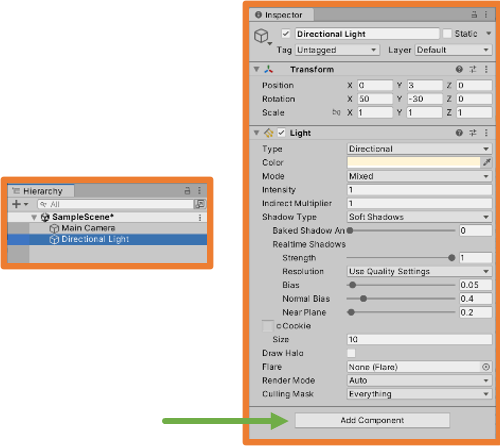 Directional Light
En el Gestor de archivos permite visualizar y realizar todas las acciones que se requieran sobre los archivos del proyecto.
Se recomienda que todas las carpetas y archivos que se quieran crear se creen desde el gestor de archivos del editor.
Cuando se ejecuta el juego (botón "Play" ▶ de la barra superior) la sección de visualización cambia a la vista de la cámara y
toda la interfaz se oscurece.
Al ejecutar el juego se puede trabajar con el proyecto para poder ver cómo reacciona según diferentes valores,
pero los cambios solo se mantienen durante la ejecución del juego.
Al no haber casi diferencia de estilo entre los dos estados a veces se nos olvida que se está ejecutando el juego y se pierden los cambios.
Desde el Menú → Edit → Preferences en la sección Colors
se puede decidir qué color va a superponer a la interfaz cuando se ejecute el juego: Playmode tint.
Interesa poner un modo que aporte mucho contraste para así saber siempre si se está ejecutando o no.
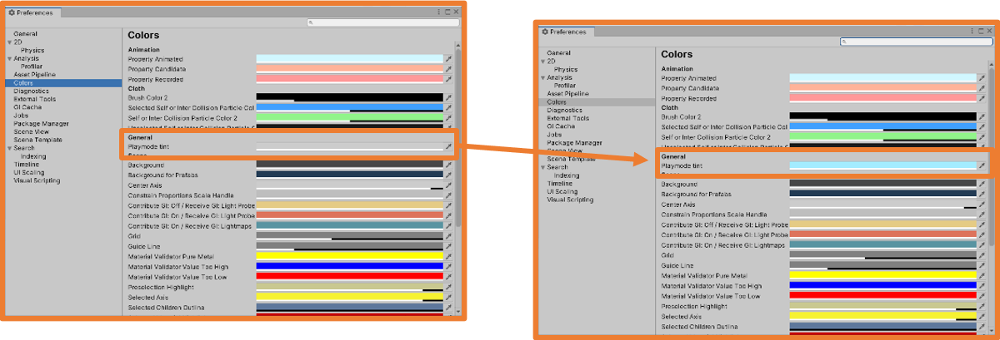
Una vez cambiado el color se aprecia mucho mejor que se está ejecutando el juego.
Añadiendo código ejecutable
Para añadir código ejecutable al proyecto se deben crear los archivos que permitan contener dicho código, a estos archivos se les llama scripts.
Existen varias maneras de añadir scripts al proyecto pero la más adecuada es mediante el gestor de archivos.
Además, es importante mantener una buena organización de los archivos por lo que lo más habitual
es crear dentro de la carpeta Assets una carpeta llamada Scripts
y en ella crear todos los Scripts necesarios.
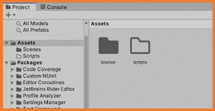
Una vez creada la carpeta Scripts con el botón derecho sobre ella o sobre la parte derecha en el gestor
(la que representa la carpeta), se debe seleccionar Create → C# Script
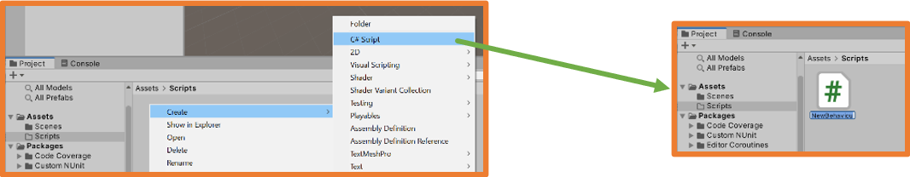
En ese momento se debe escribir el nombre del archivo, siguiendo las convenciones de C# que son similares a las de Java
(CamelCase con la primera en mayúscula).
Además, el script debe tener un nombre que identifique correctamente las acciones que realiza.
Cuando se selecciona un Script en el Gestor de archivos, en el Inspector se puede ver su código aunque no se puede editar desde ahí.
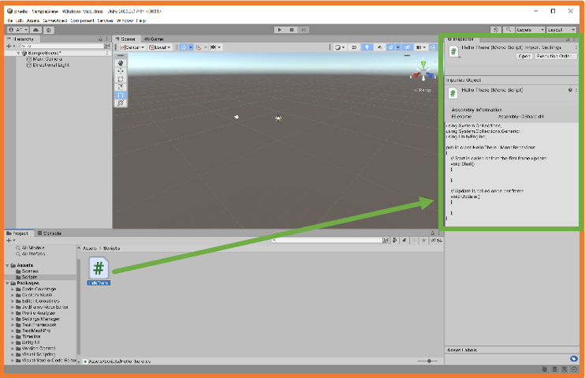
Al hacer doble clic sobre el Script se abrirá el editor de código configurado.
Microsoft Visual Studio Community Visual Studio Code
Estructura por defecto de un Script de Unity
Un Script de Unity por defecto tiene la siguiente estructura:
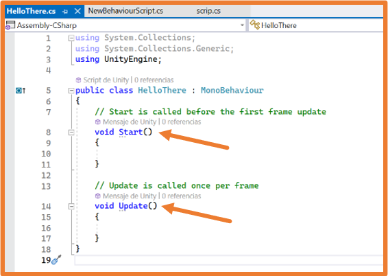
La cantidad de negº de un juego es variable por lo que el método Update no siempre se ejecuta la misma cantidad de veces.
El siguiente código hará que cuando se ejecute el script aparezcan por consola dichos mensajes.
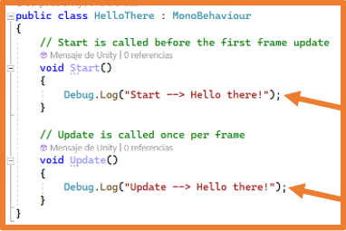
Para probarlo se pulsa el botón "Play" ▶ en la parte superior central del editor Unity.
Como se puede observar una vez seleccionada la pestaña Console no aparece ningún mensaje.
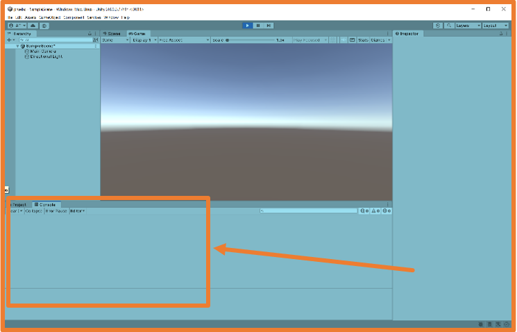
Esto se debe a que para que un script se ejecute debe estar asociado a un GameObject.
Se puede asociar un script a un GameObject arrastrando el script desde el gestor de tareas al GameObject de diferentes maneras:
Arrastrando el script hasta el GameObject en la jerarquía.
Arrastrando el script hasta el GameObject en la zona de visualización.
Seleccionando el GamObject y arrastrando el script hasta el Inspector.
Una vez se ha asociado un script a un GameObject, este se convierte en un componente del GameObject y aparece en el Inspector.
Ahora, al ejecutar el juego sí que se ejecutará el script creado.
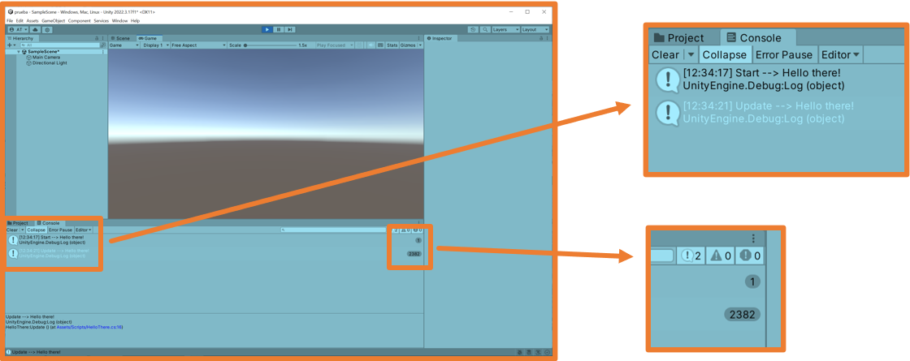
Es importante marcar la opción Collapse que unificará en una línea los mensajes con el mismo contenido e
irá aumentando el número de veces.
También puede ser interesante activar la opción Stats en la visualización para obtener información como puede ser los FPS
(frames por segundo) a los que se está ejecutando el juego.
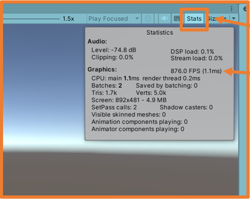
Actividad 3: Crea un Script llamado MiPrimerScript que muestre "hola mundo! y asócialo a la Main Camera, luego quítalo y asócialo a Directional Light,
finalmente crea un EmptyObject y asócialo a éste. ¿Hay alguna diferencia?"
Scripting
Como toda aplicación informática, los juegos necesitan que se codifique su funcionalidad.
En Unity la codificación de la funcionalidad se realiza mediante los scripts.
Mediante los scripts se podrá:
Responder a las entradas del jugador.
Ejecución eventos en el momento adecuado.
Crear efectos gráficos.
Controlar el comportamiento físico de los GameObjects.
Implementar un sistema de IA para los NPC del juego.
…
Actualmente el único lenguaje de programación recomendado para realizar proyectos con Unity es C#.
También hay soporte para el lenguaje UnityScript que se diseñó a partir de JavaScript específicamente para Unity,
pero se desaconseja su uso. Es posible que algún proyecto actual aún tenga scripts con UnityScript.
Antiguamente también se podría utilizar el lenguaje Boo que tenía una sintaxis similar a Python. Hoy en día no tiene soporte
C# fue creado en el año 2000 para ser compatible con la plataforma .NET de Microsoft.
Hereda lo mejor de C++, Java y Visual Basic.
Es un lenguaje orientado a objetos nativo.
Gracias a la librería IL2CPP los scripts realizados en Unity se convierten a scripts C++
para que el compilador nativo finalice la compilación en la plataforma destino.
Un script para Unity tiene la siguiente estructura básica:
UnityEngine: importa la clase MonoBehaviour necesaria para definir los scripts asociados a GameObjects.
System.Collections: librería de .NET con listas, arrays, tablas hash…
Clase definida que extiende a MonoBehaviour:
Método Start: se usa para inicializar el GameObject.
Método Update: se ejecuta una vez por frame, se le llama bucle del juego.
En C# todas las instrucciones deben acabar con ;igual que pasa en Java.
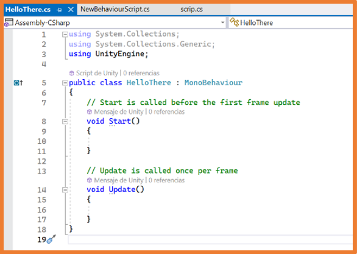
Tipos de datos en C#
Tipos de datos básicos de C# son:
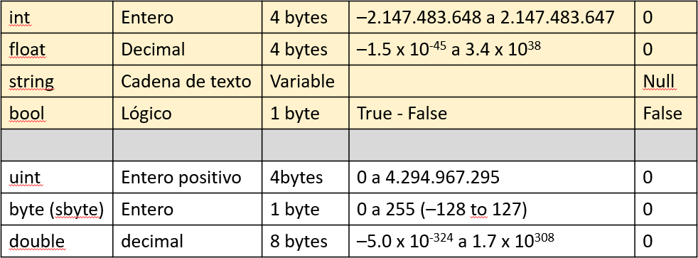
Tipos de datos compuestos:
Array: conjunto de un tipo de dato.
List: listas dinámicas (pueden modificar su tamaño).
Tipos de datos específicos de C# para Unity son:
Vector3: empaquetado de tres floats (x, y, z) que facilita el trabajo con puntos, vectores y direcciones dentro del espacio 3D.
GameObject: referencia a un GameObject de la escena o a un prefab del proyecto.
Transform, Rigidbody o cualquier otro componente: referencia a dicho componente dentro de un GameObject.
Texture, Material o cualquier otro tipo de asset: referencia a un asset del proyecto
Operadores
Los operadores son similares a los usados en Java:
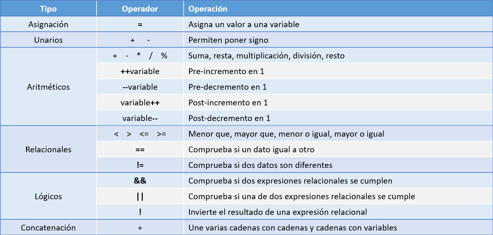
La clase Mathf permite cálculos con números tipo float:
Ejemplos:
Mathf.Abs(number)
Mathf.Round(number)
Mathf.Ceiling(number)
Mathf.Floor(number)
Mathf.Max(a, b, c, d)
Mathf.Min(a, b, c, d)
Mathf.Pow(number, exponent)
Mathf.Sqrt(number)
…
Variables
Las variables en C# se definen igual que en java:
int age;
También se puede inicializar cuando se declara:
int age = 21;
Una vez declarada en cualquier momento se puede cambiar su valor:
age = 22;
Si las variables se declaran para la clase como propiedades se pueden declarar su acceso como public o private.
Si la variable se declara dentro de un método no se debe declarar el tipo de acceso ya que solo será visible dentro de ese método.
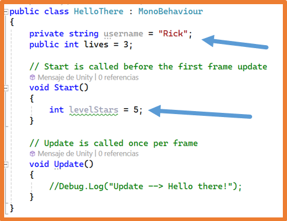
Las variables declaradas como propiedades con acceso public serán visibles desde el Inspector de Unity durante la ejecución, permitiendo cambiar su valor durante la ejecución desde allí.
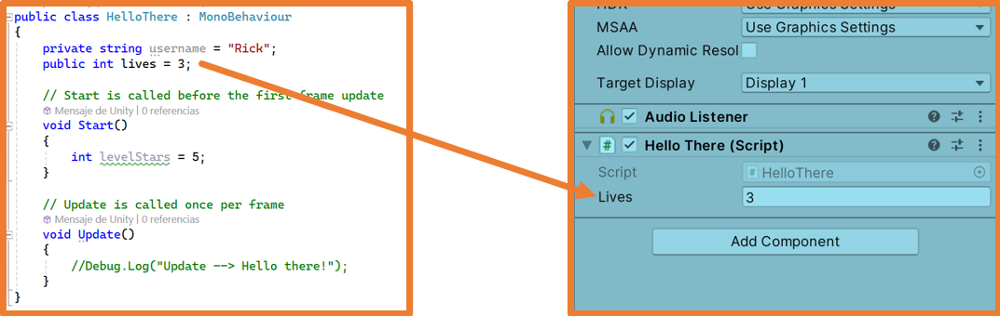
Hay que recordar que los cambios realizados durante la ejecución son cambios temporales y al parar la ejecución se volverá al estado inicial.
Estructuras de control
Arrays
Declarar un Array
Se puede indicar su tamaño y posteriormente asignar valores:
Se puede declarar asignando directamente los valores:
Recorrer un Array
Con un bucle for:
Con un bucle foreach:
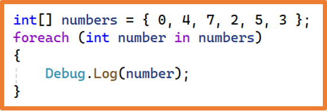
Listas
Las listas permiten modificar su tamaño y añadir/eliminar elementos de la misma.
Se necesita importar la librería:
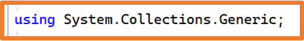
Declarar una lista vacía:
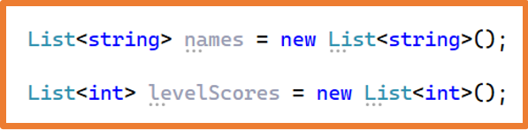
Declarar una lista asignando datos:
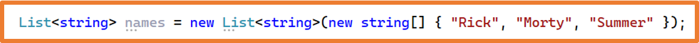
Las listas permiten modificar su tamaño y añadir/eliminar elementos de la misma.
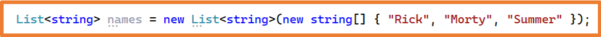
Modificar elementos se realiza igual que con los Array:
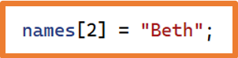
Añadir elementos a una lista:
Eliminar elementos de una lista:
Obtener la longitud de una lista:
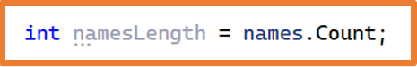
Eliminar todos los elementos de una lista:
Comprobar si un valor está en una lista:
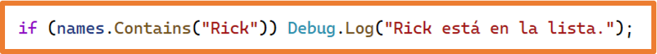
Ordenar una lista:
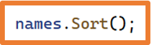
Invertir el orden de una lista:
Recorrer una lista:
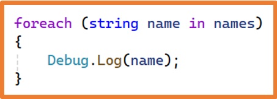
Convertir una lista en un array:
Convertir un array en una lista:
ArrayList
En un Array o en una Lista solo se pueden almacenar datos de un tipo.
En los ArrayList se permite almacenar datos de diferentes tipos además de no tener un tamaño predeterminado como las listas.
Se debe tener cuidado al cambiar los datos porque el compilador no realiza ninguna comprobación de tipo de dato:
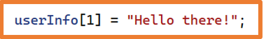
HashTable
Los HashTable también conocidos como diccionarios son un tipo de dato
compuesto en el que cada elemento es un par clave-valor.
En los HashTable se accede a los datos a través de la clave.
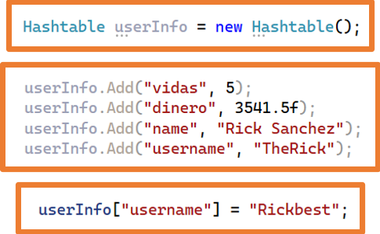
Las claves siempre deben ser de tipo string.
El tamaño de una HashTable es dinámico como las listas.
Se puede comprobar si existe una clave con el método Contains y para usar el valor se debe realizar un casting:
Recorrer un HashTable:
Métodos
Como en cualquier lenguaje orientado a objetos dentro de las clases se pueden crear métodos.
En C# para crear un método se debe seguir la siguiente estructura:
Tipo de acceso (si no se pone nada por defecto será private).
Tipo de dato que devuelve (void si no devuelve nada).
Identificador del método (primera letra en mayúscula y CamelCase).
Paréntesis para indicar los parámetros si los hay.
Llaves para indicar el bloque de código del método.
Declaración de un método:
La llamada a un método se realiza igual que en cualquier lenguaje de programación:
Clase MonoBehaviour
Cuando se crea un script C# en Unity se puede observar que la clase que contiene el script hereda de la clase MonoBehaviour.
La clase MonoBehaviour es necesaria para los scripts que se asocian a los GameObject del proyecto.
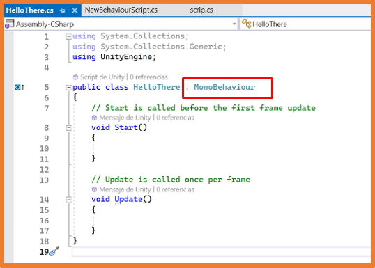
Como Unity funciona por eventos, dentro de las clases que heredan de MonoBehaviour se pueden incluir una serie de métodos definidos por defecto que se ejecutarán cuando se produzcan los eventos asociados a dichos métodos.
Por defecto se añaden dos métodos que se ejecutan con determinados eventos:
Start: se llama en el frame en el que el script se activa y justo antes de la primera llamada de cualquier método Update.
Se puede definir como bucle del juego las diferentes fases por las que pasa un script cuando se ejecuta:
Inicialización
Actualización de físicas
Actualización de INPUT
Lógica del juego
Destrucción
Cada una de estas fases tiene asociados un conjunto de métodos de la clase MonoBehaviour:
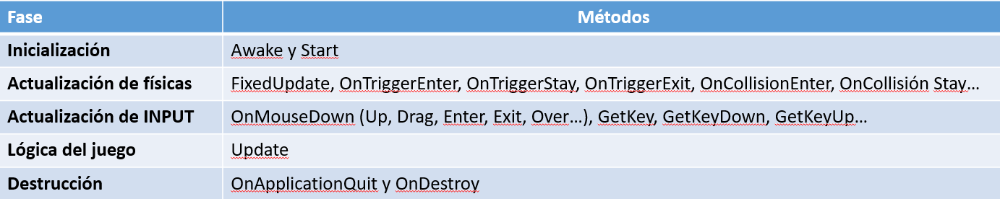
Al ejecutar el juego, Unity comienza a ejecutar el bucle del juego, de esta manera,
en cada fase ejecutará los métodos correspondientes que se encuentren en los scripts añadidos a los GameObject de la escena.
Ejemplo de un script implementando algunos de los métodos de la clase MonoBehaviour:
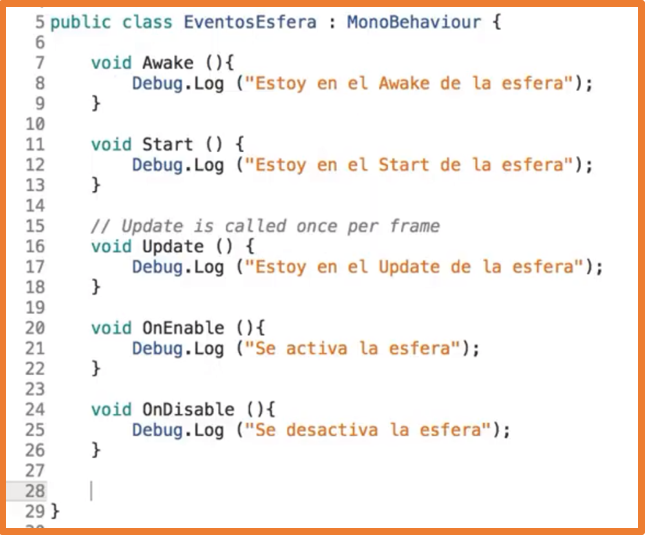
Manejo de Unity
Es muy importante aprender cómo funciona la ventana de visualización de Unity para poder trabajar correctamente con los GameObject.
La ventana de visualización es el lugar donde se pueden ver los objetos que forman parte de la escena.
En esta ventana suelen aparecer los llamados gizmos, un gizmo es un gráfico que ayuda al programador ofreciendo información sobre el GameObject dentro de la escena.
Por ejemplo, si se selecciona la luz que aparece en la escena se podrá ver cómo aparece un gizmo que indica la dirección de la luz.
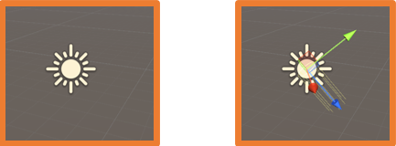
El sistema de coordenadas es el que permite ubicar a todos los GameObject en la escena.
Cada GameObject tendrá unas coordenadas que indican su posición.
Unity utiliza un sistema de coordenadas Y-Up:
x: eje horizontal
y: eje vertical
z: eje profundidad
Cada motor de juegos y cada editor 3D utiliza un sistema de coordenadas diferente.
Unity utiliza el sistema Y-Up.
Unreal y Blender utilizan el sistema Z-Up donde el eje vertical es z y el eje de profundidad es y.
En la parte superior derecha de la ventana de visualización aparece un gizmo
muy útil que indica la dirección en la que se está visualizando la escena.
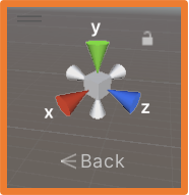
Al hacer clic en lo conos se cambia la visualización para orientarse en ese eje.
En la parte inferior de ese gizmo aparece el punto de vista actual, puede indicar "Persp" o cualquier otra dirección como "Back", si se pulsa sobre el cubo central o en el icono de debajo con el punto de vista actual, se cambia a una visualización isométrica.
Si se está desarrollando un juego en 3D la visualización irá cambiando constantemente, pero si se está desarrollando un juego en 2D la visualización por defecto no es la correcta y debería cambiarse.
En la parte superior se encuentran las siguientes herramientas.
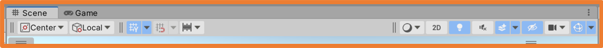
En la izquierda:
Las dos primeras son opciones de cómo funciona la herramienta "mano".
La tercera permite activar/desactivar la visualización de la rejilla.
La cuarta permite que al mover los GamObjects se "enganchen" a los puntos de la rejilla.
La quinta indica los pasos de movimiento cuando se mueve un GameObject.
En la derecha:
La primera indica cómo se van a visualizar los GameObjects de la escena (sólidos, aristas…).
La segunda permite cambiar el tipo de cámara de 3D a 2D (ortográfica).
La tercera permite activar/desactivar las luces de la escena.
La cuarta permite activar/desactivar los sonidos.
La quinta permite activar efectos como el cielo, la niebla…
La sexta permite mostrar/ocultar el número de GameObjects ocultos en la escena.
La séptima permite configurar la cámara.
La octava permite configurar la visualización de los gizmos.
En la parte superior izquierda se encuentran las siguientes herramientas que permiten desplazarse por la escena y manipular los GameObject de la misma:
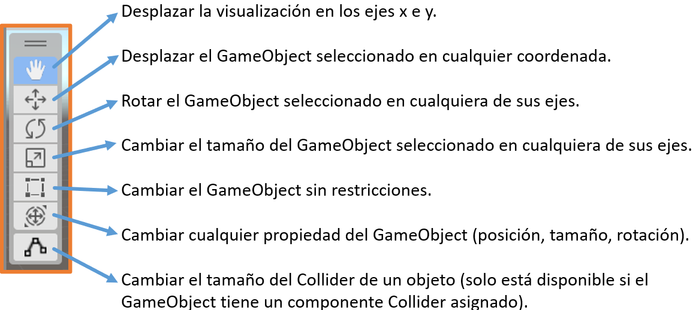
Las herramientas anteriores que permiten modificar un GameObject de la escena,
al seleccionarlas mostrarán un gizmo sobre el GameObject para facilitar la manipulación del GameObject.
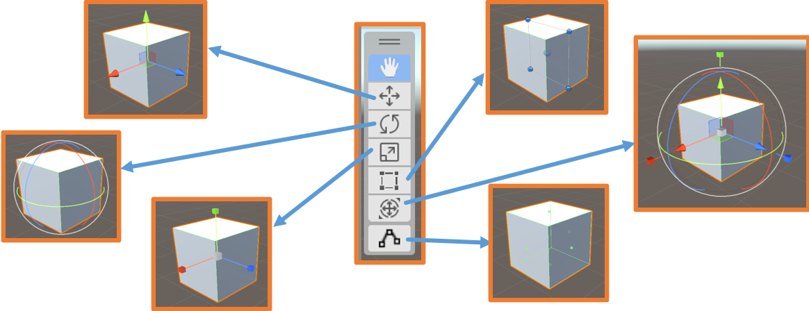
Todos los GameObjects tienen un punto pivote que será a partir del cual se ejecutarán los cambios sobre ellos.
El punto pivote por defecto se encuentra en el centro del Gameobject,
por eso el gizmo de las herramientas anteriores se dibuja desde el centro del GameObject seleccionado.
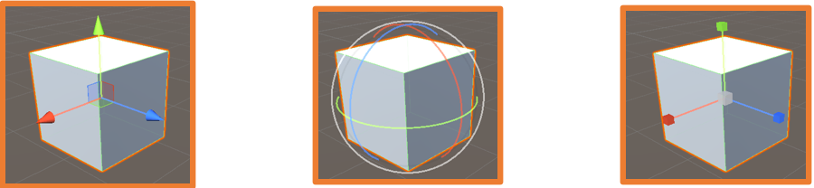
El punto pivote no se puede cambiar de sitio.
Movimiento de la cámara de visualización
Con teclas:
Flechas ⬅ ➡: desplaza izquierda-derecha la cámara.
Flechas ⬆ ⬇: zoom-in y zoom-out.
Con ratón:
Con la herramienta mano seleccionada al hacer clic y arrastrar: se desplaza en horizontal y vertical la cámara.
Botón central (rueda) del ratón: misma acción que la línea anterior.
CTRL + ALT + clic izquierdo: misma acción que la línea anterior.
Con el botón derecho pulsado: se rota la cámara sobre sí misma.
ALT + clic izquierdo: rota la cámara sobre el punto central de la visualización.
Todos los GameObject se pueden mover/alinear con la visualización.
Esto es útil con las cámaras porque permiten alinear la cámara a la vista de visualización para que al ejecutar el juego sea esa orientación vista la que se vea.
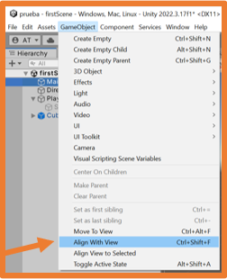
Como se ha indicado anteriormente, si se está desarrollando un juego en 2D interesa cambiar la visualización de la escena para que se ajuste a la visualización
del juego teniendo el eje z en horizontal y el eje y en vertical.
Agregando GameObjects a la escena
Para agregar GameObjects a la escena se puede hacer click derecho sobre la zona de elementos de la escena (jerarquía)
o bien se puede pulsar la opción del menú GameObject.
La opción del menú ofrece además acciones a realizar sobre un GameObject si está seleccionado.
Dependiendo del tipo de proyecto se tendrán disponibles diferentes tipos de GameObjects para a la escena
(desde el Package Manager se pueden agregar paquetes para ampliar el catálogo).
Se pueden añadir GameObjects vacíos (empty) que sirven para agrupar otros GameObjects y así mantener la jerarquía organizada.
También existen objetos 3D que serán los primeros con los que se trabajará en clase.
Proyecto 3D Proyecto 3D con el paquete 2D Sptrite
Al agregar un GameObject a la escena en la jerarquía se permite cambiar el nombre
(posteriormente se puede cambiar haciendo clic derecho sobre él en la jerarquía).
Además, al añadir el GameObject, este se posiciona en el centro de la escena sean cuales sean esas coordenadas.
Al seleccionar el GameObject en el inspector se puede ver los componentes que tiene,
entre ellos se encuentra Transform que indica los valores de posición, rotación y escala.
Los GameObject se agregan en la jerarquía como hijos de la escena.
Desde la jerarquía, se pueden organizar los GameObject unos dentro de otros arrastrándolos encima del que debe contenerlos o
arrastrándolos fuera del que los contiene.
Si se hace clic derecho sobre un objeto en la jerarquía y se añade un GameObject, este se añadirá directamente como hijo del que se ha pulsado.
Todas las modificaciones que se realicen sobre un GameObject afectan a todos los GameObjects que se encuentren
dentro de él en la jerarquía.
Punto pivote de un GameObject
Todos los GameObject tienen un punto pivote situado en su centro.
Las coordenadas de este punto pivote en la escena es lo que utiliza Unity para realizar todos los cálculos necesarios.
El punto pivote no se puede cambiar de sitio.
El punto pivote también es la referencia cuando un GameObject sigue a otro, por ejemplo, una cámara que sigue a un personaje,
en este caso la cámara tomará como centro a seguir el punto pivote del GameObject.
Si se quiere que ese centro de seguimiento sea diferente se puede crear un GameObject vacío y añadirlo al GameObject principal en las coordenadas que se quiera, y a continuación indicar que la cámara siga al GameObject vacío.
Modificando GameObjects
Para modificar un GameObject se debe seleccionar o haciendo clic en él en la jerarquía o haciendo clic en él en la visualización de la escena.
Si se hace doble clic en un GameObject de la jerarquía además de seleccionar el GameObject la vista se centrará en ese GameObject.
Si se hace clic sobre un GameObject en la visualización además de seleccionar el GameObject la vista se centrará donde se hecho doble clic.
Todas las modificaciones se realicen sobre un GameObject toman como referencia el punto pivote del GameObject.
Existen varias formas de modificar un GameObject en la escena:
Cambiando manualmente sus valores en el inspector
Se puede indicar que el GameObject se sitúe en el centro del las coordenadas (0,0,0).
Esta acción puede ser problemática debido a que el punto pivote por defecto se encuentra en su centro, así que al mover a (0,0,0)
puede ocurrir algo como lo de la siguiente imagen donde el GameObject tiene la mitad debajo del punto (0,0,0).
Desde el inspector situando el ratón encima de una de las coordenadas
cambia el icono y permite que al hacer clic y desplazar sin soltar el clic se cambie el valor
Con las herramientas vistas anteriormente
Utilizando el ratón podemos modificar un GameObject.
Al seleccionarlas aparece un gizmo y al interactuar con él con el ratón se realizan las acciones requeridas.
Cada gizmo funciona de una manera diferente
Movimiento solo en el eje X
Movimiento en los ejes que no son Y (plano X, Z):
Al usar las herramientas con los gizmos se puede utilizar el ajuste por snaps.
Los pasos o snaps por defecto se pueden cambiar:
Para realizar las modificaciones por snaps al usar los gizmos se debe pulsar la tecla control.
Todas las modificaciones se realizan tomando como punto de referencia el punto pivote.
Se pueden realizar modificaciones cambiando el punto de referencia a un vértice de la malla del GameObject, para esto se debe pulsar la tecla v tras seleccionar la herramienta.
Se puede ver como al pulsar la tecla v, al mover el ratón sobre el GameObject el gizmo se sitúa en el vértice más cercano.
Esta acción se conoce como vertex snap y permite situar GameObjects a partir de uno de sus vértices en el vértice de otro Gameobject.
Unidades de medida
Por defecto las unidades de medida usadas en Unity son:
Distancias: metros.
Tamaños: metros.
Peso (masa): kilogramos.
Tiempo: segundos.
Es importante tener esto en cuenta ya que el comportamiento de los GameObjects con las físicas va a depender de su tamaño y peso.
Materiales
Los materiales permiten dar aspecto a los GameObject.
Para crear un material se hace clic derecho en el gestor de archivos y se selecciona Create → Material,
al crearlo permitirá asignarle un nombre.
Cabe recordar que para mantener la organización de archivos los materiales deben incluirse en una carpeta llamada Materials
dentro de la carpeta Assets.
Un material en el gestor de archivos se representa con una esfera y según la configuración que se le aplique en el inspector tendrá un aspecto u otro.
Con una buena configuración se puede conseguir que el material sea realista.
También se pueden conseguir materiales de la Unity Asset Store y de repositorios de internet.
Se puede aplicar un material a un GameObject de varias maneras:
Arrastrar el material al GameObject en la jerarquía.
Arrastrar el material al GameObject en la visualización.
Arrastrar el material al GameObject en el inspector en la zona "Add Component".
Materiales Físicos
Los materiales físicos (Physic Material) permiten controlar como van a interactuar físicamente los GameObject cuando colisionan entre sí.
Se suelen utilizar para permitir que los GameObject reboten o para que haya fricción entre ellos.
Para crear un material físico se hace clic con el botón derecho sobre el gestor de archivos y se elige la opción Create → Physic Material.
Al crearse, se debe introducir su nombre.
Los parámetros que se pueden configurar en un material físico son:
Se puede aplicar un material físico a un GameObject de varias maneras:
Arrastrar el material al GameObject en la jerarquía.
Arrastrar el material al GameObject en la visualización.
Arrastrar el material al GameObject en el inspector en la zona "Add Component".
Actividad 3. Montando la escena
Crea un proyecto 3D en Unity llamado EscenaTuNombre.
Pon la cámara de visualización como si se fuera a desarrollar un juego en 2D (eje z hacia atrás).
Añade a la escena un plano y modifica su tamaño para que tenga poca profundidad, pero sea muy ancho (como una pasarela en horizontal de izquierda a derecha).
Añade a la escena un cubo, una esfera, una cápsula y un cilindro. Sitúalos en la escena como quieras, pero deben de estar en la misma coordenada Z que el plano.
Solo uno debe estar tocando la superficie del plano.
De los GameObject que no están tocando la superficie del plano debes colocar uno en la misma coordenada z que el que está tocando la superficie otro,
la coordenada x debe estar un poco desplazada (tiene que seguir estando encima del otro) y la coordenada y debe ser más alta, en la parte superior de la escena.
Crea 5 materiales con color y aspecto distinto y asigna cada uno a un GameObject.
Sitúa la visualización en un ángulo diferente al de la cámara, puedes rotarla y moverla, pero tienen que aparecer el plano y todos los objetos.
Haz una captura de la ventana de visualización y ponle el nombre TuNombreUnity1.png Haz una captura de la ventana del juego en ejecución, ponle el nombre TuNombreUnity2.png.
Comprime las dos capturas en un archivo rar o zip llamado TuNombre y adjunta ese archivo comprimido a la tarea.
Actividad 4. Eventos MonoBehaviour
Abre el proyecto EscenaTuNombre.
Crea un script llamado EventsScript y añádelo al GameObject que está en la superficie.
En el script añade instrucciones para mostrar mensajes por consola con Debug.Log para los siguientes eventos:
Start, Update, OnMouseEnter (el ratón se sitúa sobre el GameObject), OnMouseDrag (se clica sobre el GameObject y sin soltar se mueve el ratón).
Los mensajes deben seguir el siguiente formato "TuNombre (NombreEvento): LoQueQuieras".
Haz clic en el script en el gestor de archivos para que se vea en el inspector el código del script, a continuación,
ejecuta el juego y haz una captura donde se visualice la consola y el inspector (recuerda activar la opción Collapse de la consola),
ponle a la captura el nombre TuNombreUnity3.png.
Comprime la captura en un archivo rar o zip llamado TuNombre y adjunta ese archivo comprimido a la tarea.
Actividad 5. Gravedad
Abre el proyecto EscenaTuNombre.
Uno de los GameObject de la escena se encuentra en la misma vertical que el que estaba tocando la superficie,
pues a ese objeto que está en la parte superior de la escena añádele el componente RigidBody.
Ejecuta el juego y observa qué ocurre.
Cambia el peso de ese GameObject y vuelve a ejecutar el juego para observar qué ocurre.
Cambia otras configuraciones del RigidBody y vuelve a ejecutar el juego para observar qué ocurre.
Haz una captura de la ventana del juego en ejecución antes de que el cubo caiga, ponle el nombre TuNombreUnity4.png.
Haz una captura de la ventana del juego en ejecución cuando el cubo golpea al objeto que tiene debajo, ponle el nombre TuNombreUnity5.png.
Haz una captura de la ventana del juego en ejecución cuando el cubo deje de moverse, ponle el nombre TuNombreUnity6.png.
Comprime las dos capturas en un archivo rar o zip llamado TuNombre y adjunta ese archivo
Componentes de GameObject
Los GameObject pueden contener diferentes componentes.
Como mínimo todos los GameObject tienen_el compone_te Transform que sirve para indicar la posición, la rotación y el tamaño del GameObject
Los GameObject geométricos también tienen un Mesh y un Mesh Renderer para poder dibujarse.
Los GameObject que se visualizan en las cámaras tienen un Collider para detectar las colisiones.
Se pueden añadir otros componentes a los GameObject desde el Menú → GameObject o
desde el inspector con el botón "Add Component" que aparece en la parte inferior.
Usando el botón "Add Componen" aparece un buscador en el que se puede escribir el componente que se quiere.
Cuando se desarrolla un videojuego suele ser necesario que algunos GameObjects estén afectados por las físicas
(gravedad, fuerzas…) para eso se necesita que los GameObject tengan un componente llamado RigidBody.
En la configuración del RigidBody se indica el peso del GameObject dentro de la escena entre otros parámetros.
UI (User Interface)
La interfaz de usuario (UI) son elementos que se añaden a la escena para dar información al usuario.
Con a la interfaz de usuario se pueden crear los menús y el HUD (Head-Up display).
La interfaz de usuario se puede crear tanto con GameObjects 2D como 3D pero habitualmente se utilizan GameObjects 2D.
Dentro de la interfaz de usuario pueden aparecer GameObjects como texto, imágenes, sliders, scrollbars, botones o campos de texto.
Los GameObjects de interfaz de usuario deben ser hijos de un GameObject de tipo Canvas.
Cuando se añade a la escena un GameObject de interfaz de usuario, si no existe un Canvas en la escena,
se creará para poder contener el GmaObject de la interfaz de usuario.
UI - Texto
Existen dos GameObjects para añadir texto a la escena:
Text: texto primitivo con pocas opciones de configuración.
TextMeshPro: texto avanzado con muchas opciones de configuración.
Existen otros GameObject de tipo MeshPro que mejoran a los tipos primitivos.
Se recomienda el uso de los MeshPro siempre que estén disponibles.
Cuando se añade un TextMeshPro por primera vez al proyecto aparecerá una ventana indicando que se necesita importar todos los paquetes
necesarios, se debe pulsar en el botón "Import TMP Essentials".
También indica que se pueden importar paquetes de ejemplos y extras.
Para visualizar correctamente los elementos del Canvas en la pantalla hay que realizar
desde el inspector algunos cambios en la configuración.
Se debe seleccionar como "Render Mode" la opción "Screen Space - Camera"
y posteriormente arrastrar desde la jerarquía la cámara a la casilla "Render Camera"
UI - Imágenes
Para añadir imágenes a la interfaz de usuario se necesita que las imágenes sean sprites.
Los sprites son imágenes de mapa de bits que contienen una unidad mínima de información como puede ser la imagen de un botón o la imagen de un personaje.
Una imagen puede contener uno o más sprites.
Cada sprite se pueden añadir a la escena directamente de manera independiente convirtiéndose en un GameObject.
Si una imagen contiene varios sprites se optimiza la carga de las imágenes en el juego.
Los sprites pueden usarse para formar un personaje completo y poder animar cada uno de los sprite de manera independiente.
También pueden usarse para formar la animación de un personaje o un objeto al moverse haciendo que un GameObject vaya cambiando de sprite.
Una imagen con varios sprites también sirve para contener los diferentes elementos del mundo o de la interfaz de usuario.
El primer paso para poder añadir sprites al proyecto Unity es añadir el paquete 2D Sprite desde el Menú → Window → Package Manager.
De esta manera se instala la herramienta Unity Sprite Editor.
El siguiente paso es arrastrar las imágenes al gestor de archivos a una carpeta llamada Sprites.
Al seleccionar una imagen del gestor de archivos, en el inspector se puede indicar el tipo de textura que es.
Para convertirla en un Sprite se debe elegir la opción Sprite (2D and UI).
Al realizar esta acción estará disponible el botón Sprite Editor y
al pulsarlo se abrirá el editor que permite crear el sprite a partir de la imagen.
Si la imagen solo contiene un Sprite al estar seleccionado el modo por defecto "Single"
solo con abrir el editor ya se habrá convertido la imagen en un Sprite.
Cuando una imagen se convierte en un Sprite en el gestor de archivos aparece una flecha sobre ella.
El editor de sprites permite modificar el sprite.
Si una imagen contiene varios sprites, en el inspector la opción Sprite Mode se debe marcar como Multiple.
Es importante que el fondo de la imagen sea transparente para obtener mejores resultados con los sprites.
De esta manera el editor de sprite permite obtener varios sprites a partir de la imagen.
Desde el editor de sprites se pueden seleccionar a mano los diferentes sprites con el ratón, una vez seleccionado un sprite se debe poner un nombre para reconocerlo posteriormente:
Una vez creado el sprite, con la opción Trim se recorta el sprite ajustándose al contenido de la imagen (el fondo debe ser transparente).
Se puede cambiar la manera de seleccionar el sprite si se quiere ajustar mejor a la imagen.
Con Outline Tolerance se ajusta el contorno a la imagen,
con Generate se genera el contorno y con Apply se crea el sprite con ese contorno.
Si los sprites se organizan en la imagen de una manera ordenada,
desde el editor en el desplegable Slice se puede seleccionar la manera en la que se va a dividir la imagen para que
el editor cree automáticamente los sprites:
Automatic: el editor detecta los sprites según el contenido.
Grid By Cell Size: en la imagen los sprites se encuentran organizados en forma de rejilla, con esta opción se debe indicar el tamaño de cada cuadro de la rejilla.
Grid By Cell Count: en la imagen los sprites se encuentran organizados en forma de rejilla, con esta opción se debe indicar el número de filas y de columnas.
Tras seleccionar la opción deseada se debe pulsar el botón Slice para generar todos los sprites
Si la imagen contiene los sprites de animación de un personaje, como en el ejemplo,
cuando se utilizan las opciones del botón Slice se debe estudiar el contenido de la imagen para que el pivote sea correcto
y la animación funcione correctamente.
Lo más habitual en estos casos es que los sprites estén organizados en forma de rejilla y el pivote se sitúe en el centro,
aunque esto puede cambiar entre las diferentes hojas de sprites.
Una vez creados los sprites en el gestor de archivos al pulsar la flecha que aparece en la imagen se mostrarán todos los sprites creados junto con su nombre.
Una vez una imagen se ha convertido en uno o varios sprites, se puede arrastrar uno de los sprite a la jerarquía o a la visualización y se añadirá un GameObject que muestre ese sprite.
También se puede añadir un GameObject de tipo UI → Image y añadirle el sprite arrastrándolo a la opción Source Image.
Prefabs
Un Prefab es un GameObject con todas sus características
(tamaño, rotación, giro, material, texturas, físicas…) almacenado como un asset.
Al tener un GameObject guardado como un prefab este podrá ser instanciado desde un script.
Un ejemplo típico de un prefab en un juego serían los objetos que dejan los enemigos cuando desaparecen tras ser golpeados.
Los prefab también son fáciles de exportar para poder ser usados en otros proyectos.
Para crear un prefab se debe arrastrar el objeto desde la jerarquía al gestor de archivos.
Para mantener una buena organización todos los prefab se situarán en una carpeta llamada Prefabs.
En la jerarquía se indica que el GameObject proviene de un prefab mostrando su nombre en color azul.
En el gestor de archivos aparece una previsualización del prefab.
Al seleccionar el prefab en el inspector se pueden ver sus características y componentes.
Un GameObject en la jerarquía que proviene de un prefab se puede editar en la escena actual sin que esta edición afecte al prefab.
Para editar un prefab se debe hacer doble clic sobre él en el gestor de archivos.
Los cambios sobre el prefab se replicarán en todos los GameObject del proyecto que estén creados a partir del prefab.
En una escena se pueden añadir todas las copias de un prefab que se necesiten.
Desde un script también se pueden añadir GameObjects que sean prefabs.
Actividad 6. Imágenes y prefabs
Abre el proyecto EscenaTuNombre.
Añade un GameObject del tipo Cube, crea un material nuevo para él y asígnaselo.
Crea 5 copias de este último cubo y crea una figura juntándolos como quieras (puedes rotarlos y escalarlos).
Crea un GameObject vacío y añádele los 6 cubos que forman la figura, ten cuidado con las coordenadas.
Crea un Prefab con ese GameObject vacío.
Añade a la escena un texto con tu nombre.
Añade a la escena una foto tuya tipo carnet (actual).
Haz una captura de toda la ventana de Unity en ejecución, se tiene que ver el Asset en el gestor de archivos y
en la ventana de visualización se tienen que ver todos los GameObject de la escena, ponle el nombre TuNombreUnity7.png.
Comprime la captura en un archivo rar o zip llamado TuNombre y adjunta ese archivo comprimido a la tarea.
La Clase GameObject
Acceso a las propiedades del GameObject
Desde un script añadido a un GameObject se puede acceder a las propiedades del propio GameObject y a todos los componentes que se añadan al GameObject.
Para acceder a toda esta información se utiliza la variable gameObject
que se inyecta directamente al heredar de la clase MonoBehaviour.
Cambiando la propiedad nombre por código
Todos los GameObject tienen al menos un componente Transform que sirve para indicar la posición,
la rotación y el tamaño del GameObject.
Como es un componente presente en todos los GameObject,
Unity inyecta directamente la propiedad transform que se puede usar directamente o
desde la propiedad gameObject para poder utilizarlo directamente.
Para acceder a un componente diferente a Transform,
se debe crear una propiedad para poder almacenar ese componente en ella mediante el método GetComponent y poder acceder.
Por ejemplo, para acceder al componente Collider:
Al ejecutar se desactiva el collider
Acceso a otros GameObjects
Para acceder desde un script a otros GameObjects se debe declarar una propiedad de tipo GameObject
y posteriormente asignarle el GameObject que se quiera. (SphereGO → GameObject).
Hay varias opciones para asignar el GameObject a la propiedad.
Si la propiedad es pública se puede arrastrar el GameObject desde la jerarquía a la variable en el Inspector.
Desde el propio script con el método Find de la clase GameObject
para buscar por el nombre (en estos casos la propiedad suele ser privada).
Al ejecutar se buscan los GameObjects con esa etiqueta y se rellena el array
Asignar etiquetas a los GameObject y
desde el propio script con el método FindGameObjectsWithTag de la clase GameObject
para buscar por etiqueta.
En este caso la variable se debe declarar como array porque pude haber más de un GameObject con esa etiqueta (en estos casos la propiedad suele ser privada).
Al ejecutar se buscan los GameObjects con esa etiqueta y se rellena el array.
Al acceder a otros GameObjects se puede acceder a sus propiedades, por ejemplo,
el siguiente script añadido a la MainCamera, accedería a la propiedad Text de un GameObject de tipo TextMeshPro y modificaría su valor.
Para poder acceder al GameObject se deberá arrastrar dicho GameObject a la casilla correspondiente del Inspector al seleccionar la MainCamera.
Acceso a componentes de otros GameObjects
Una vez se tiene la referencia a un GameObject con cualquiera de las técnicas vistas anteriormente,
se puede acceder a los componentes de dicho GameObject con el método GetComponent
igual que se accede a los componentes del propio GameObject .
Si la propiedad para acceder al componente se declara pública al arrastrar el GameObject
a la casilla en el Inspector se asignará directamente el tipo de componente especificado al declarar la propiedad.
Se puede acceder a los scripts de otros GameObjetcs a partir del GameObject al que se quiere acceder y al nombre del script.
Se puede utilizar cualquier técnica de las vistas anteriormente para obtener la referencia al otro GameObject.
El componente Transform
El componente Transform se estructura en tres elementos:
Posición
Rotación
Escala
Para cada elemento se especifica un valor por cada coordenada que se puede consultar como se ha visto anteriormente.
Para modificar la posición, la rotación y la escala
se usan objetos de la clase Vector3.
El código de la imagen representa las coordenadas: x=3, y=8, z=1.
Los parámetros que admite son números decimales (float) aunque se puede indicar con enteros.
Si se indica un número decimal se debe añadir al final la letra f:
Cambiar posición de un GameObject
Para cambiar la posición de un GameObject:
Indicar un nuevo Vector3 para la propiedad position de su Transform:
Operar la propiedad position del Transform con un Vector3:
Usar el método Translate sobre el Transform:
Con Translate se puede indicar si se usará como referencia el transform propio (valor por defecto)
o el punto central del espacio de coordenadas (0, 0, 0):
Además, la clase Vector3 dispone de algunas propiedades que devuelven objetos Vector3 a una unidad en las coordenadas:
Indicar un nuevo Vector3 para la propiedad rotation de su Transform
usando el método Euler de la clase Quaternion:
Usar la propiedad eulerAngles (comportamiento similar al método anterior):
Usar el método Rotate sobre el Transform.
Con Rotate se puede indicar si se usará como referencia el transform propio (valor por defecto)
o el punto central del espacio de coordenadas (0, 0, 0).
Girar alrededor de otro
Con el Método RotateAround(origen, eje, velocidad) se puede hacer que un GameObject gire alrededor de otro:
Con el método LookAt(transformOtherGameObject) se puede hacer que un GameObject mire siempre hacia otro GameObject:
Estas dos técnicas deben usarse dentro del método Update del script.
Escalar un GameObject
Para escalar un GameObject solo tiene sentido el escalarlo respecto a su punto pivote.
Por esta razón se utiliza la propiedad localScale:
El componente Transform en la jerarquía
Cuando se tienen GameObjects agrupados, el componente Transform permite acceder a todos los Transform y GameObjects de la agrupación
El orden de acceso a los GameObject hijos es el mismo que el orden en el que se encuentren en la jerarquía.
Desde un GameObject agrupado también se puede acceder a su padre.
Movimiento desde los métodos Update y FixedUpdate
Método Update
El método Update se ejecuta una vez por cada frame generado.
Cuando se aplica una modificación del componente transform de un GameObject en el método Update se produce un movimiento, por ejemplo:
añadir 0,01 unidad a la posición x en cada Update.
Moviendo el GameObject
El problema de usar el método Update es que la cantidad de FPS que se generar depende de muchísimos factores,
desde la capacidad del equipo donde se ejecuta el juego hasta la cantidad de elementos que se muestran en un momento determinado.
Por esta razón, no es buena idea realizar movimientos directamente de esta manera.
Existen dos formas para solucionar este problema:
La clase Time y su método deltaTime.
Si se multiplica un movimiento por Time.deltaTime se consigue que el movimiento sea constante independientemente de la cantidad de frames
de cada momento.
Time.deltaTime devuelve el valor 0,02 (que corresponde a 20 milisegundos).
(Técnica usada hasta la creación del método siguiente).
El método FixedUpdate de la clase MonoBehaviour.
Se ejecuta en intervalos regulares de tiempo de 20 ms (50 veces/segundo).
Además, es habitual crear una propiedad de tipo float llamada speed para usarla como multiplicador y controlar la velocidad.
Mover un objeto en el eje x dependiendo del valor de la propiedad speed desde el método Update.
Método FixedUpdate
Por defecto el método FixedUpdate se ejecuta cada 20 ms,
pero este comportamiento se puede cambiar desde Menú → Edit → Project Settings… en la sección Time.
Mover un objeto en el eje x dependiendo del valor de la propiedad speed desde el método FixedUpdate
Con los dos métodos, Update y Fixedupdate se puede conseguir el mismo resultado si se acaba multiplicando por el mismo valor.
speed*Time.deltaTime speed
La ventaja de FixedUpdate es que se puede configurar desde los ajustes del proyecto.
La clase Input
Mediante la clase Input se pueden capturar los eventos de entrada
del dispositivo del usuario (teclado, ratón, gamepad…).
La clase Input permite unificar en un único punto todos los dispositivos de entrada disponibles.
Unity ofrece una herramienta donde poder configurar los dispositivos de entrada.
En muchos juegos también se permite cambiar esa configuración para que el usuario tenga una experiencia personalizada.
Desde el Menu → Edit → Project Settings…
se abre la configuración del proyecto, allí en la opción Input Manager se puede visualizar y
configurar los dispositivos de entrada:
La clase MonoBehaviour ofrece algunos métodos que permiten ejecutar código cuando se producen eventos de ratón:
OnMouseDown
OnMouseDrag
OnMouseEnter
OnMouseExit
OnMouseOver
OnMouseUp
OnMouseUpAsButton
La clase Input tiene una serie de métodos que devuelven un valor booleano cuando se produce la interacción del usuario con una tecla,
un botón del ratón o un botón virtual como "Fire1".
Estos métodos se suelen utilizar dentro del método Update del script debido a que se ejecuta muchas más veces que otros métodos.
La clase Input tiene una serie de métodos para capturar los valores de los ejes de movimiento.
Estos métodos devuelven un valor decimal float que cuando el eje está en reposo el valor es 0 y cuando se pulsan devuelven un entre -1 y 1 dependiendo de la aceleración (tiempo de pulsación de la tecla o rango de movimiento del joystick).
Existen los ejes:
Horizontal y Vertical: w, a, s, d, flechas, joystick, cruceta.
Input.GetAxis("Horizontal")
Input.GetAxis("Vertical")
Mouse X y Mouse Y: asignados al movimiento del ratón.
Input.GetAxis("Mouse X")
Input.GetAxis("Mouse Y")
Movimiento mediante la clase Input
Gracias a la clase Input se pueden mover GameObjects cuando el usuario interactúe con los dispositivos de entrada.
En el código, teniendo la cámara con la orientación que se indica con el gizmo:
flecha arriba o w → mover hacia adelante (se aleja de la cámara).
flecha abajo o s → mover hacia atrás ( se acerca a la cámara).
flecha izquierda o a → mover hacia izquierda.
flecha derecha o d → mover hacia derecha.
flecha arriba o w → mover hacia adelante.
flecha abajo o s → mover hacia atrás.
flecha izquierda o a → rotar hacia izquierda.
flecha derecha o d → rotar hacia derecha
Con cualquiera de los dos códigos anteriores, si se sitúa la cámara detrás del GameObject, en la misma orientación x y se añade la cámara como hija del GameObject,
la cámara seguirá al GameObject mientras se mueva.
Actividad 7. Modificando GameObjects mediante Inputs
Crea un proyecto 3D en Unity llamado InputsTuNombre.
Pon la cámara de visualización como si se fuera a desarrollar un juego en 2D (eje z hacia atrás).
Añade a la escena un plano y modifica su tamaño para que sea de 15x15x15 y esté en las coordenadas (0, 0, 0).
Añade un GameObject del tipo Capsule y sitúalo en las coordenadas (0, 1, 0).
Añade un GameObject del tipo Cube y sitúalo en las coordenadas (3, 0.5, 0).
Añade un GameObject del tipo Sphere y sitúalo en las coordenadas (6, 0.5, 0).
Crea un material de color naranja y asígnaselo al GameObject Capsule.
Crea un material de color azul y asígnaselo al cubo.
Crea un material de color verde y asígnaselo a la esfera
Duplica el cubo y muévelos por el plano (puedes hacer unas 20 copias).
Crea un script para la cápsula y añade en él el código necesario para realizar las siguientes acciones:
Al pulsar los ejes Horizontal y vertical la cápsula debe moverse por el plano.
Al pulsar la tecla E la esfera debe escalarse en todos sus ejes creciendo 0.5.
Al pulsar la tecla Q la esfera debe escalarse en todos sus ejes decreciendo -0.5. Debes comprobar que la esfera nunca sea más pequeña que 0.5.
Crea un script para la cámara y añádele el código para que siempre esté mirando hacia la cápsula
Movimiento cinemático y movimiento físico
Tipos de movimientos en Unity:
Cinemático:
Movimiento que se realiza directamente sobre el componente transform del GameObject.
Estos movimientos son independientes de las físicas del juego (gravedad, aceleración, impulsos, inercias, rozamiento…).
Físico:
Movimientos que se realizan usando el motor físico del juego.
El GameObject debe tener el componente Rigidbody.
Al añadir el componente Rigidbody a un GameObject en el inspector se puede ver su configuración.
Propiedades de Rigidbody:
Mass: peso del objeto en kilogramos.
Drag: resistencia al movimiento lineal.
Angular Drag: resistencia a las rotaciones.
Use Gravity: indica si le afecta o no la gravedad.
Is Kinematic: si se activa, el GameObject no se verá afectado por el motor físico.
Se suele activar para detectar colisiones. (solo se podrá manipular con su Transform).
Constraints: permite bloquear coordenadas.
Con los movimientos cinemáticos (sin físicas) cuando se mueve un GameObject lo que ocurre es que el GameObject se está transportando
a la nueva posición.
Cuando un GameObject tiene el componente Rigidbody no es recomendable modificar su posición usando su
Transform ya que al transportarse a la nueva posición podría aparecer parcialmente dentro de otro objeto y generar una colisión indeseada.
Para mover un GameObject que tenga un Rigidbody se le deben aplicar fuerzas que empujen al GameObject en alguna dirección.
Si las fuerzas se aplican sin interacción con el Input se utiliza el método FixedUpdate.
Si las fuerzas se aplican con interacción con el Input se utiliza el método Update.
Movimiento Físico
Ejemplo de movimiento físico:
Con el código anterior se debe tener cuidado con los materiales físicos de los GameObjects
ya que la fricción puede hacer que el GameObject no se comporte como se desea.
El suelo ofrece rozamiento y al empujar al GameObject este vuelca hacia adelante.
Además, por la fricción, al aplicar las fuerzas el GameObject tarda un tiempo en realizar el movimiento y al parar de aplicar fuerzas el GameObject va frenándose.
Para solucionar estos problemas se puede optar una de las siguientes opciones:
Crear Materiales físicos para ofrecer más realismo.
Estos materiales físicos se deben configurar correctamente y se deben de asignar a los GameObject que afecten al movimiento como son superficies o personaje.
Añadir restricciones al componente Rigidbody para bloquear la posición y/o rotación en alguno de los 3 ejes.
Como se ha visto para aplicar fuerzas se necesita una propiedad el tipo Rigidbody en el código.
Algunos de los métodos que se pueden utilizar son:
AddForce: aplica fuerzas de empuje en las coordenadas del mundo.
AddTorque: aplica fuerzas de giro en las coordenadas del mundo.
AddRelaviteForce: aplica fuerzas de empuje en las coordenadas locales.
AddRelaviteTorque: aplica fuerzas de giro en las coordenadas locales.
AddForceAtPosition: aplica fuerzas de empuje en una posición determinada.
AddExplosionForce: se utiliza para simular explosiones.
Estos métodos tienen una versión que además de recibir un Vector3 también se les puede indicar el tipo de fuerza a aplicar con las siguientes propiedades:
ForceMode.Force: en función del objeto. fuerza = masa * aceleración.
ForceMode.Acceleration: aceleración ignorando la masa del GameObject.
ForceMode.Impulse: aplica la fuerza de manera instantánea en un frame (se usa en Update).
ForceMode.VelocityChange: aplica directamente una velocidad.
Usando solo movimientos físicos se puede mantener la inercia de los movimientos en cualquier eje.
Combinación de movimientos cinemáticos y físicos
Aunque no es recomendable, se pueden mezclar los dos tipos de movimiento:
Cinemático: mover al personaje/enemigos por las superficies.
Físico: aplicar fuerza hacia arriba para que el personaje salte.
El problema con este código es que si se deja de mover el personaje en mitad de un salto, no mantendrá la inercia en el salto.
Actividad 8. Rigidbody y seguimiento de cámara
Abre el proyecto InputsTuNombre.
Añade a la cápsula el componente Rigidbody.
Configura las restricciones del Rigidbody de la cápsula para que no vuelque al chocar.
A la hora de programar el movimiento de la cápsula había dos opciones, la que rotaba con las teclas a y d y la que no rotaba.
Si usaste la que no rotaba, cambia el código para usar la opción que sí que rota.
Añade a la esfera el componente Rigidbody.
Desactiva el script de la cámara.
Pon la visualización detrás de la cápsula como en la imagen (eje z apuntando al fondo).
Selecciona la cámara y selecciona la opción Menú → GameObject → Align With View.
Haz que la cámara sea hija de la cápsula.
Ejecuta el juego y mueve la cápsula para observar que la cámara ahora sigue a la cápsula y que la cápsula colisiona con el resto de GameObjects gracias al Rigidbody.
Colisiones
Para poder detectar las colisiones entre GameObjects, estos deben tener un componente Collider
(suele estar presente en todos los GameObjects).
Unity ofrece dos mecanismos que permiten detectar las colisiones entre GameObjects:
Mediante Collider.
Mediante Trigger (Collider marcado como is Trigger generalmente cuando son GameObjects sin representación gráfica en pantalla).
Lo más habitual es utilizar el nombre del GameObject o las etiquetas (Tag) para detectar las colisiones.
Colisiones con Collider
Las colisiones mediante collider se utilizan cuando un GameObject toca a otro.
Por ejemplo:
El jugador empuja a otro GameObject.
Un GameObject impacta en otro GameObject como podría ser un disparo.
…
Los collider pueden ser 3D o 2D, así, la clase MonoBehaviour ofrece métodos que se ejecutarán cuando se detecte una colisión entre colliders.
Versiones 3D:
void OnCollisionEnter(Collision collision): se activa en el frame en el que inicia la colisión.
void OnCollisionStay(Collision collision): activo mientras la colisión se mantiene.
void OnCollisionExit(Collision collision): se activa en el frame que termina la colisión.
Versiones 2D:
void OnCollisionEnter2D(Collision collision)
void OnCollisionStay2D(Collision collision)
void OnCollisionExit2D(Collision collision)
En los métodos se recibe un objeto del tipo Collisión a través del cual se podrá acceder a todo lo relacionado con la colisión y con el otro GameObject.
Al colisionar con otros GameObjects se pueden ejecutar acciones.
A través de la colisión se puede acceder a todos los elementos del GameObject contra el que se ha colisionado.
Colisiones con Trigger
Las colisiones con trigger se utilizan para determinar si un GameObject esta en una zona determinada
Por ejemplo:
Un GameObject tiene un collider más grande que su tamaño para poder detectar que el jugador está en el radio de acción
y cuando pulse una tecla lo pueda recoger (consumible) o utilizar (interruptor).
Un GameObject vacío tiene un collider para detectar si el jugador está dentro de él.
…
Para que un GameObject actúe como Trigger se debe marcar la opción Is Trigger en el Inspector dentro del componente Collider.
En ocasiones los GameObject que actúan como Trigger solo tienen los componentes Transform y Collider porque no es necesario que se muestren en pantalla.
Si se configura un collider como Is Trigger los métodos que ofrece la clase MonoBehaviour son los siguientes:
Versiones 3D:
void OnTriggerEnter(Collider other): se activa en el frame en el que inicia la colisión.
void OnTriggerStay(Collider other): activo mientras la colisión se mantiene.
void OnTriggerExit(Collider other): se activa en el frame que termina la colisión.
Versiones 2D:
void OnTriggerEnter2D(Collider other)
void OnTriggerStay2D(Collider other)
void OnTriggerExit2D(Collider other)
En esta ocasión el otro objeto se recibe en los métodos como objetos del tipo Collider que es el Collider del otro GameObject implicado.
En el GameObject que se mueve:
En el GameObject configurado como is Trigger:
En el siguiente ejemplo, un GameObject invisible con un Collider aplica una fuerza que hace flotar a otro GameObject que esté dentro de él,
siempre y cuando el otro GameObject tenga un componente Rigidbody:
Métodos Intersantes
Método Destroy
El método Destroy elimina al GameObject, si no se indica tiempo se eliminará inmediatamente,
si se indica tiempo se eliminará pasados esos segundos.
Método Instantiate
El método Instantiate permite crear GameObjects en tiempo de ejecución.
Ejemplos de uso:
Cuando el jugador dispara debe crearse el proyectil en ese punto y moverse en la dirección en la que apunta.
En una zona del escenario aparece un enemigo en la parte superior que cae y al llegar abajo desaparece
(bucle con Instantiate, movimiento, detección por trigger al llegar abajo y Destroy).
Se crea un objeto cuando se pulsa el botón "Fire1" (botón izquierdo del ratón).
Cuando el jugador toca al GameObject este se replica a si mismo 10 veces.
Se crea un objeto cuando en intervalos de tiempo fijos sin tener que realizar ninguna acción.
Al GameObject creado se le aplica una fuerza al crearse y saldrá lanzado.
GameObject generador GameObject generado
Utilidades
Mediante los métodos Invoke e InvokeRepeating
se puede indicar el tiempo de espera antes de realizar la llamada a otro método.
Se pueden cancelar las invocaciones a ctivas con el método CancelInvoke.
Si no se le indica ningún parámetro cancelará todas las invocaciones, si se le pasa como parámetro el nombre de un método cancelará esa invocación.
Otra manera de realizar las tareas de InvokeRepeating es con el uso de Corrutinas.
Para cancelar corrutinas se utilizan los métodos StopAllCoroutines y StopCoroutine("NombreMétodo").
Práctica 7 – Pachinko
Un Pachinko es una máquina recreativa de origen japonés en la que el jugador tiene una gran cantidad de bolas de acero que se introducen en la máquina recreativa.
La máquina de pachinko tiene un sistema que lanza las bolas desde abajo por un lateral para que lleguen a la parte superior y desde ahí comiencen a bajar.
En el tablero hay una serie de alfileres (pines) en los que las bolas metálicas rebotan y toman caminos de manera aleatoria.
Además, en el tablero puede haber diferentes puertas por las que pueden entrar las bolas para así conseguir puntos con los que se consiguen premios,
y en ocasiones, puertas que devuelven la bola al jugador para que vuelva a introducirla.
Por último, las bolas que llegan a la parte inferior no otorgan premios.
A continuación, se pueden ver algunos ejemplos reales y en videojuegos.
Crea un proyecto 3D en Unity llamado PachinkoTuNombre.
Instala en el proyecto el paquete de Unity que se adjunta
en la tarea de una de las siguientes maneras:
Al hacer doble clic en el archivo del paquete se abrirá la ventana de diálogo para incorporar todos los elementos del paquete.
Al arrastrar el archivo del paquete se abrirá la ventana de diálogo para incorporar todos los elementos del paquete.
El paquete incluye además del tablero, una imagen con sprites y
una serie de materiales que puedes aplicar al tablero y a las bolas metálicas.
Todos los elementos del tablero incluyen un Collider para que las bolas no puedan traspasarlos, y además se incluye un Collider
delante para que así las bolas no puedan salir despedidas hacia delante (quedando el hueco para las bolas metálicas).
Primero deberás crear los siguientes prefabs (presta atención a la escala de los elementos para que no haya problema con las colisiones):
Una bola metálica con físicas y colisiones.
Un pin estático (puede ser un cilindro) con material metálico y con material físico para que reboten las bolas.
Un pin giratorio (puede ser un cilindro con un cubo alargado, o con dos cubos alargados en forma de cruz o cualquier cosa que se te ocurra)
que no tendrá material que haga que rebote. En este pin cuando la bola choque con él, deberá girar el pin teniendo como eje su centro.
Puerta en la que se ganan 5 puntos si la bola cae en ella.
Puerta en la que se ganan 10 puntos si una bola cae en ella, debe ser algo más pequeña que la anterior.
Puerta en la que se obtiene una bola extra.
Los prefabs de las puertas deben tener los sprites incluidos para indicar al usuario qué ocurre al caer la bola en esas puertas.
En la escena debes añadir:
En la parte superior central debe verse una foto tuya tipo carnet (actual), tu nombre la cantidad de puntos y la cantidad de bolas restantes.
Tantos pines estáticos y giratorios como quieras para que el juego se vea dinámico.
Dos puertas de 5 puntos.
Una puerta de 10 puntos.
Dos puertas de bola extra.
Mecánicas del juego:
El juego empezará con 100 bolas y 0 puntos.
Al pulsar la tecla flecha izquierda caerá una bola desde el hueco superior izquierdo y se restará una bola a la cantidad de bolas.
Al pulsar la tecla flecha derecha caerá una bola desde el hueco superior derecho y se restará una bola a la cantidad de bolas.
Cuando una bola cae en alguna puerta se deben sumar los puntos correspondientes o sumar una bola a la cantidad de bolas restantes.
Cuando una bola cae en alguna puerta o por la parte inferior se debe destruir.
En todo momento el HUD debe estar actualizado con los puntos actuales y la cantidad de bolas restantes.
Los GameObjects en la escena deben tener nombres apropiados.
Crea y asigna todas las etiquetas que veas que son necesarias.
Crea los scripts necesarios y añádelos a los GameObjects o Prefabs para que el juego funcione correctamente.
Extras:
Cada vez que se cree una bola su material será uno aleatorio de entre todos los materiales de bolas metálicos incluidos en el paquete.
Prefab de una puerta que premia al jugador con 50 bolas más. Debe ser una puerta que sea difícil que una bola caiga a ella.
Una vez creada la puerta añádela al tablero.
Modificar el tablero para que sea como los pachinko originales en los que la bola se lanza desde abajo por el lateral hacia la parte superior del tablero.
En este caso las teclas de las flechas se sustituirán por la tecla espacio y al pulsarla se lanzará una bola.
Debes crear un mecanismo para que la fuerza de la bola pueda cambiar, por ejemplo, una rueda que gire con las teclas de las flechas e indique la potencia.